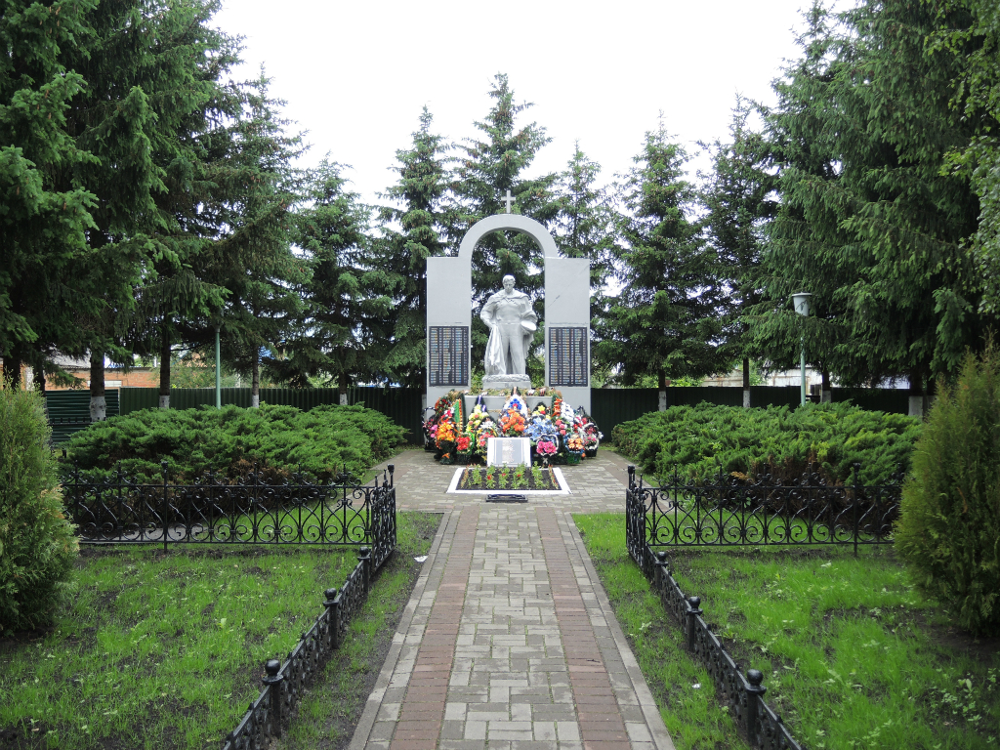

Места нашей области, посвящённые Великой Победе
 Домой
Домой
Мемориал погибшим воинам (Становое)
Мемориал размещен на братской могиле воинов, погибших в годы Великой Отечественной войны. Открыт в 1957 году. В 1995 году в честь 50–летия со дня Великой Победы над фашистской Германией мемориал был реконструирован по проекту липецкого скульптора А. Е. Вагнера – воздвигнута арка, увенчанная крестом.
В центре композиции возвышается величественная скульптура воина–освободителя, склонившего знамя над лавровым венком. Фигуру воина обрамляет арка, увенчанная крестом. На опорах арки – мраморные плиты, на которых высечены фамилии 115 жителей райцентра, погибших в годы Великой Отечественной войны. У основания монумента на мраморной плите высечены имена воинов, захороненных в братской могиле. Перед могилой – чаша Вечного огня. Территория монумента выложена тротуарной плиткой. Вечнозеленым фоном мемориалу служат высокие строгие ели, которые придают этому месту торжественность.
Изображения:
